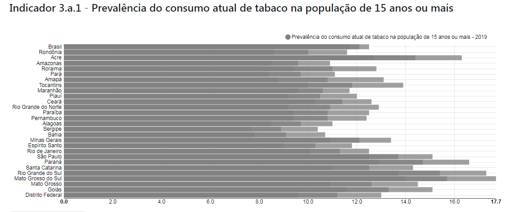

O.D.S.-3
Saúde e Bem Estar
Outros Objetivo de Desenvolvimento Sustentável
3
Brasil: Meta 3.a Fortalecer a implementação da Convenção-Quadro para o Controle do Tabaco no Brasil.
Indicadores
3.a.1 - Prevalência de fumantes na população de 15 ou mais anos
Brasil: Meta 3.b Apoiar a pesquisa e o desenvolvimento de tecnologias e inovações em saúde para as doenças transmissíveis e não transmissíveis, proporcionar o acesso a essas tecnologias e inovações incorporadas ao SUS, incluindo medicamentos e vacinas, a toda a população.
Indicadores
3.b.1 - Taxa de cobertura vacinal da população em relação às vacinas incluídas no Programa Nacional de Vacinação 3.b.2 - Ajuda oficial ao desenvolvimento total líquida para a investigação médica e para os setores básicos de saúde 3.b.3 - Proporção de estabelecimentos de saúde que dispõem de um conjunto básico de medicamentos essenciais e relevantes disponíveis e a custo acessível numa base sustentável
Brasil:Meta 3.c Aumentar substancialmente o financiamento da saúde e o recrutamento, desenvolvimento, formação e retenção do pessoal de saúde, especialmente nos territórios mais vulneráveis.
Indicadores
3.c.1 - Número de profissionais de saúde por habitante
Brasil:Meta 3.d Reforçar as capacidades locais para o alerta precoce, redução e gerenciamento de emergências e riscos nacionais e globais de saúde.
Indicadores
3.d.1 - Capacidade para o Regulamento Sanitário Internacional (RSI) e preparação para emergências de saúde
